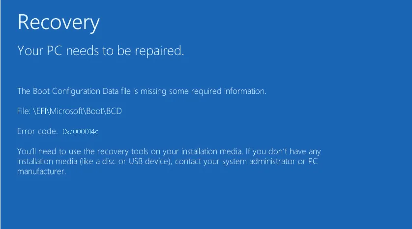

¿Por qué fallan las actualizaciones de Windows?
Las actualizaciones pueden fallar por conexión inestable, espacio insuficiente, drivers desactualizados o errores en el sistema.
Errores comunes
- Error 0x80070005
- Error 0x800f0922
- Actualización se queda en 0%
- No hay espacio suficiente para la actualización
Soluciones paso a paso
- Verifica tu conexión a internet
- Limpia la carpeta de actualizaciones: `C:\Windows\SoftwareDistribution`
- Ejecuta el Solucionador de problemas de Windows
- Desactiva temporalmente el antivirus
- Usa Windows Update Assistant o actualización manual
Consejos finales
Si la actualización sigue fallando, puedes hacer una instalación limpia de Windows. Siempre respalda tus archivos importantes antes de proceder.